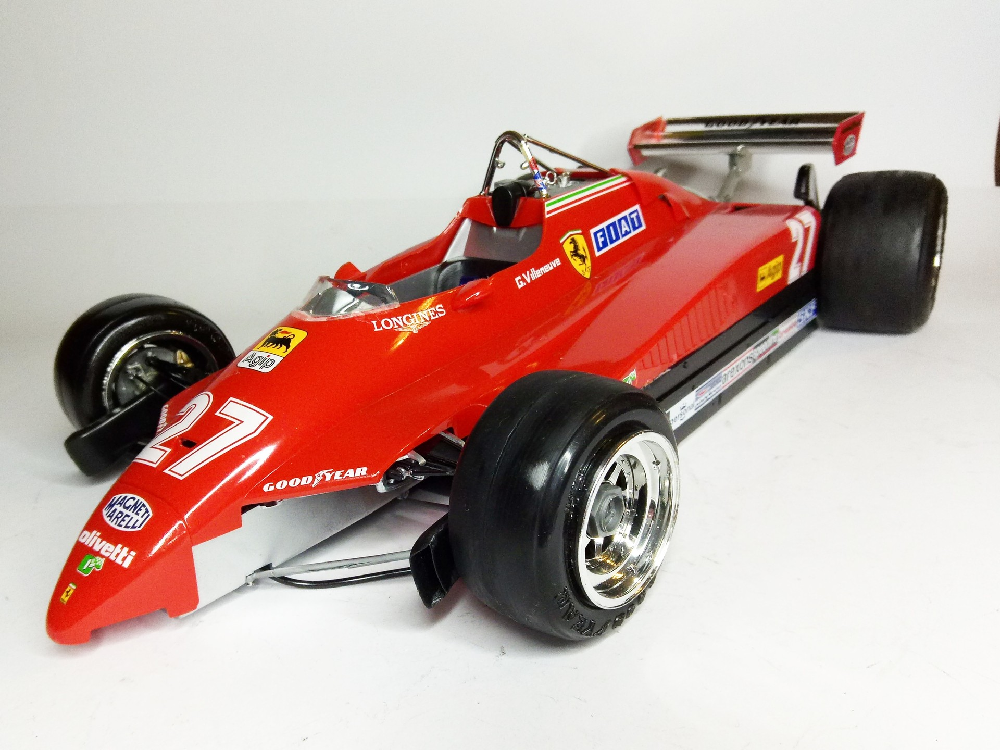
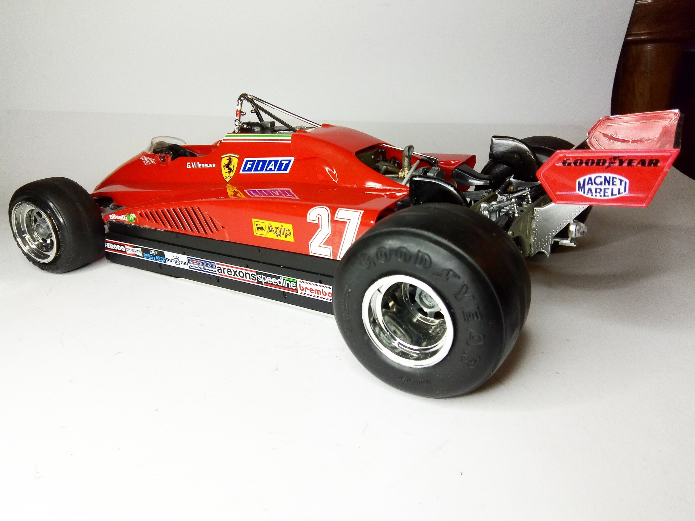
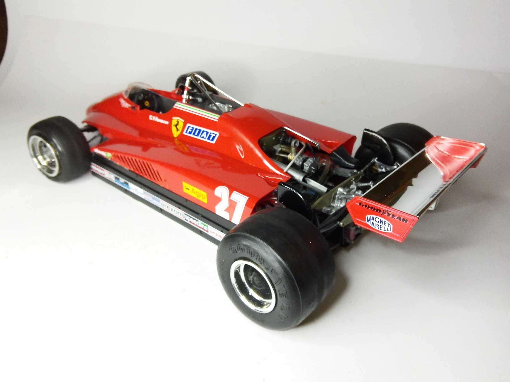

Auto e veicoli stradali · scale model archive
Ferrari 126 C2
Ferrari 126 C2 — Kit: Revell, Scale: 1/12. Best car of the 1982 F1 championship but unlucky #1/12 #Revell #Ferrari #126C2

Photo gallery


English description
Best car of the 1982 F1 championship but unlucky
#1/12 #Revell #Ferrari #126C2
Descrizione italiana
Best auto del 1982 campionato di F1 but unlucky.